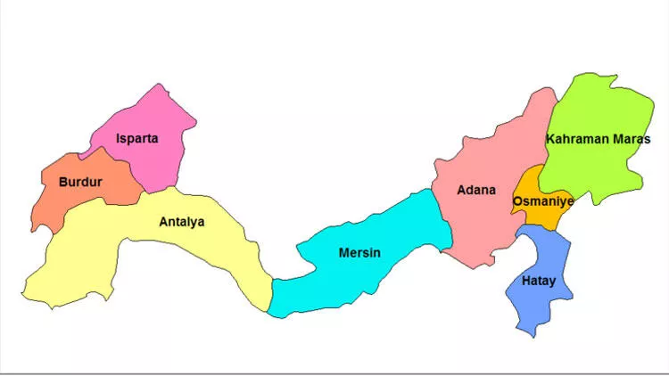

Anadolu'nun güneyinde Akdeniz kıyısı boyunca uzanır. Genişliği 120-180 km arasında değişir. Batı ve kuzey batısında Ege bölgesi, kuzeyinde İç Anadolu Bölgesi, doğusunda Güneydoğu Anadolu Bölgesi ve güneyinde ise Akdeniz bulunur. Güneydoğusunda Suriye ile komşudur. Türkiye'nin başka bölgelerinde olduğu gibi Akdeniz Bölgesi'nde de bölge sınırları ile yönetim birimleri olan illerin sınırları tümüyle çakışmaz.Akdeniz iklimi görülmektedir ve bu iklimde yazlar sıcak ve kuraktır. Kışlar ise ılık ve yağışlıdır. Yaz ve kış mevsimindeki yağış miktarı arasında büyük bir fark bulunmaz. İç kesimlere doğru karasal iklim görülür.